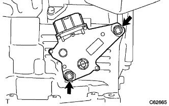
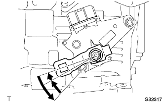
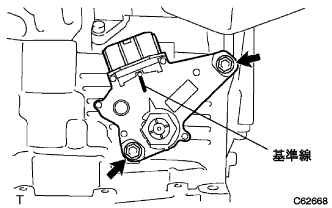
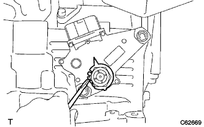
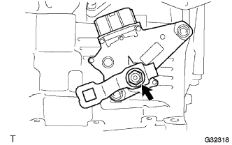

ニュートラルスタート スイッチASSY 取り付け |
| 1. ニュートラルスタート スイッチASSY取り付け |
|  |
ニユートラルスタートスイツチを取り付け、ボルト2本を仮付けする。
ナットおよびナットストッパを取り付ける。
コントロールシヤフトレバーを仮付けする。
|  |
コントロールシヤフトレバーを反時計方向に止まるまで回転させ、その位置から時計方向に２ノッチ回転させＮレンジにし、コントロールシヤフトレバーを取りはずす。
|  |
ニュートラル基準線とナットストッパの突部を合わせて、ボルト2本を本締めする。
|  |
マイナスドライバーを使用して、ナットストッパのツメをかしめる。
|  |
コントロールシャフトレバーおよびスプリングワッシャを取り付け、ナットを締め付ける。
| 2. トランスミッション コントロールケーブルASSY取り付け |
 |
ナットで、コントロールケーブルをコントロールシヤフトレバーに取り付ける。
クリップで、コントロールケーブルをブラケットに固定する。
| 3. シフトレバー位置点検 |
シフトレバーをNレンジから各レンジにシフトする。このときシフトレバーが円滑に操作でき、各レンジに節度よく動き、ポジションインジケータが表示しシフトレバー位置が一致していることを確認する。
シフトレバーを手前に引いたときのみP、R、Lの各レンジにシフトできることを確認する。
エンジンを始動し、Dレンジにシフトしたとき車両が前進し、Rレンジにシフトしたときブザー音がして車両が後退することを確認する。
| 4. シフトレバー位置調整 |
コントロールシャフトレバーのナットをはずし、コントロールケーブルを切り離す。
コントロールシャフトレバーを反時計方向へ止まるまで回し、そこから2段階戻した位置(Nレンジ)にする。
 |
図のように、シフトレバーをNレンジにシフトし、Rレンジ側に押し付けた状態で、コントロールケーブルを取り付け、ナットで締付ける。
調整後、操作具合および作動を点検する。